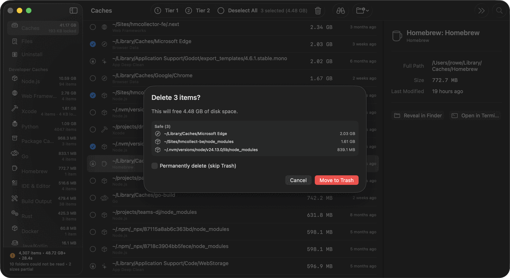

You should not have to trust a program that deletes your files.
DDCC is built to be checkable. Every path is attributed by something on your Mac that declares the relationship. Every removal is tiered by what it costs you to be wrong. Destructive actions are Trash-first, opt-in, and confirmed. The source is there to read.
- Tier 1 selected by default
- Tier 2 unlocked per scan
- Tier 3 needs the word typed
Tiers measure blast radius, not size.
Size is only one part of the decision. The tier comes from the recovery cost if removing the item turns out to be a mistake. When an item could sit in two tiers, it goes in the more cautious one.
| Tier | What it means | How it behaves |
|---|---|---|
| 1 · Safe | Regenerated automatically, at no cost but time | Selected by default |
| 2 · Costly | Comes back, but costs a download or a long rebuild | Locked; unlocked per scan, priced first |
| 3 · Destructive | Holds state that does not come back | Locked; the only tier that requires typing DELETE |

Attribution is evidence, not resemblance.
Folder names can resemble app names without belonging to them. DDCC attributes a path when something declares the relationship, and the row says which declaration.
| Evidence | Who declares it | Confidence |
|---|---|---|
| Sandbox container | macOS, by bundle identifier | Declared |
| Application group | The app's signed entitlements | Declared |
| Homebrew zap stanza | The cask author | Declared |
| Installer receipt | The installer that wrote the files | Declared |
| Broken dependency pointer | A manifest naming a file that is gone | Provable |
| A similarly named folder | Nobody | Not used |
What DDCC's safety guard leaves alone.
Apple-owned paths
Apple's namespace is declined by name before any other rule runs.
Shallow, high-value folders
Your home directory and its document folders are protected by depth rules that no filter setting can override.
Paths outside allowed roots
Paths an app genuinely owns but which sit outside the folders DDCC may remove from are listed and left alone.
Root-owned files, without you
Removing an app installed for everyone goes through Finder, so macOS asks you for Touch ID. DDCC uses that system prompt instead of holding privileges itself.

No account. No telemetry. No network connection of any kind. The only program DDCC launches is Finder, and only to complete a removal you chose.